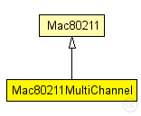

This documentation is released under the Creative Commons license
This documentation is released under the Creative Commons licenseExtends the the 802.11b MAC protocol by multi channel support meaning changing of the channel used for transmission and reception during run-time. This module is intended to be used in combination with the Decider80211MultiChannel as decider for the physical layer. See Nic80211MultiChannel for a pre configured NIC using this module.
Note: Decider80211MultiChannel does not model interference between adjacent channels!
This module supports ad-hoc mode only (does not generate or handle management frames), and does not support fragmentation, RTS threshold, duplication detection and recovery.
The following diagram shows usage relationships between types. Unresolved types are missing from the diagram. Click here to see the full picture.
The following diagram shows inheritance relationships for this type. Unresolved types are missing from the diagram. Click here to see the full picture.
| Name | Type | Description |
|---|---|---|
| Mac80211 | simple module |
Implementation of the 802.11b MAC protocol. This module is intended to be used in combination with the Decider80211 as decider for the physical layer. |
| Name | Type | Default value | Description |
|---|---|---|---|
| notAffectedByHostState | bool | false | |
| coreDebug | bool | false |
debug switch |
| headerLength | int | 272bit |
length of the MAC packet header (in bits) |
| address | string | "auto" |
MAC address as hex string (12 hex digits), or "auto". "auto" values will be replaced by a generated MAC address in init stage 1. |
| debug | bool | false |
enable debugging for this module |
| queueLength | int | ||
| rtsCtsThreshold | int | -1 |
Number of bits in a packet before RTS/CTS is used. Is currently not used. |
| bitrate | double | ||
| autoBitrate | bool |
auto bit rate selection support: specify borders at which to change modulation. |
|
| snr2Mbit | double |
threshold to use 2Mbit (in dB) |
|
| snr5Mbit | double |
threshold to use 5.5Mbit (in dB) |
|
| snr11Mbit | double |
threshold to use 11Mbit (in dB) |
|
| neighborhoodCacheSize | int |
keep information on neighborhood |
|
| neighborhoodCacheMaxAge | double |
consider information in cache outdate if older than (in seconds) |
|
| txPower | double |
the power to transmit packets with [mW] |
| Name | Value | Description |
|---|---|---|
| class | Mac80211MultiChannel |
| Name | Direction | Size | Description |
|---|---|---|---|
| upperLayerIn | input |
from upper layer |
|
| upperLayerOut | output |
to uppe layer |
|
| upperControlIn | input |
control from upper layer |
|
| upperControlOut | output |
control to upper layer |
|
| lowerLayerIn | input |
from lower layer |
|
| lowerLayerOut | output |
to lower layer |
|
| lowerControlIn | input |
control from lower layer |
|
| lowerControlOut | output |
control to lower layer |
// // Extends the the 802.11b MAC protocol by multi channel support meaning // changing of the channel used for transmission and reception during run-time. // This module is intended to be used in combination with the // Decider80211MultiChannel as decider for the physical layer. // See Nic80211MultiChannel for a pre configured NIC using this module. // // Note: Decider80211MultiChannel does not model interference between adjacent // channels! // // This module supports ad-hoc mode only (does not generate or handle // management frames), and does not support fragmentation, RTS threshold, // duplication detection and recovery. // simple Mac80211MultiChannel extends Mac80211 { parameters: @class(Mac80211MultiChannel); }
This documentation is released under the Creative Commons license